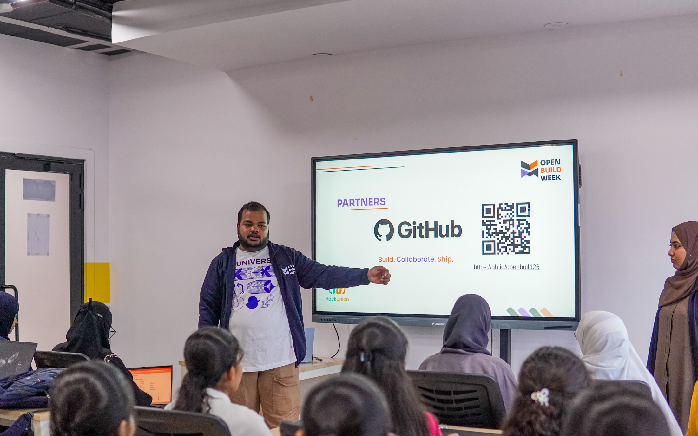

HackUnion Engineering Journal
Build & Ship
9 min read
How to Get the Most Out of a Hackathon
Winning is one possible outcome of a hackathon. A working project, new skills, and a stronger sense of how you build under pressure are outcomes you can control. Here's how to actually get them.

A hackathon is a strange format if you’ve never done one. You’re given a short amount of time, a loose theme, a team of people you may have just met, and an expectation that something functional will exist by the end of it. That combination is exactly why hackathons teach you things a classroom or a solo project usually can’t - and also why they can go badly if you walk in without a plan.
This is a practical guide to the full experience: before, during, demo, and after. None of it guarantees a win. All of it improves your odds of walking away with something real.
Before the Hackathon
Understand the theme properly. Most hackathons have a theme or track, and it’s worth spending real time reading it closely rather than skimming it. Themes are often broader than they first appear, and a narrow reading of them is one of the most common reasons teams pick weak ideas early. Ask what the organizers are actually trying to encourage - is it innovation, technical depth, social impact, something else - and let that shape your idea search instead of guessing.
Prepare your environment ahead of time. Nothing burns hackathon hours faster than setup problems. Before the event, make sure your development environment is ready: your editor, the language runtimes you’re likely to use, an account on whatever platform you plan to deploy to, and any API keys you might reasonably need. You won’t know your exact stack until you have an idea, but you can eliminate the generic friction in advance.
Get comfortable with basic Git and GitHub workflows before you need them under pressure. At minimum, know how to:
git clone <repo-url>
git checkout -b feature/your-feature-name
git add .
git commit -m "clear, specific message"
git push origin feature/your-feature-name
and how to open a pull request, resolve a simple merge conflict, and pull the latest changes from teammates. If you’ve never dealt with a merge conflict before, it’s worth practicing once beforehand rather than learning it for the first time at 2 a.m. with three people waiting on you.
Know your own strengths and weaknesses honestly. Are you stronger on backend logic or UI? Do you move fast but skip edge cases, or are you careful but slow? This isn’t about judging yourself - it’s information your future team needs to divide work sensibly. A team of four people who all want to write backend code and nobody wants to touch the frontend is a team heading toward a rough Sunday morning.
Find teammates deliberately, not randomly. A good hackathon team usually covers a mix of skills - someone comfortable with backend or logic, someone comfortable with frontend or UI, someone who can think through the problem and the presentation, and ideally someone who’s done this before and can help pace the weekend. If you don’t know anyone, most events have some way to find teammates beforehand or during team-formation time - use it, and ask direct questions about what people want to build and how they like to work, not just what they know.
Choosing an Idea
This is where most hackathon outcomes are actually decided - often before a single line of code is written.
A small idea that works is almost always better than a huge idea that never gets finished. This sounds obvious and gets ignored constantly. Teams consistently overestimate how much they can build in the time available, especially early in the event when energy is high and nothing has gone wrong yet. The fix isn’t to think smaller for its own sake - it’s to be honest about the clock.
To land on a workable idea:
- Define the problem in one sentence. If you can’t state the problem clearly and specifically, the idea isn’t ready yet.
- Identify a real user. Not everyone - a specific type of person with a specific need. This makes scope decisions much easier later, because you can ask does this help that person specifically instead of guessing.
- Reduce scope aggressively, early. Whatever your first version of the idea is, assume it’s about 40% too big. Cut features before you start, not after you’re already behind.
- Choose an MVP - the smallest version that actually demonstrates the core idea. Not the smallest version that technically runs. The smallest version that proves the concept works.
- Decide explicitly what you will not build. Write it down if you have to. This prevents scope creep from sneaking back in around hour twenty when someone says it’ll only take an hour about a feature that will not, in fact, only take an hour.
During the Hackathon
Divide responsibilities clearly and early, based on the strengths you identified beforehand. Ambiguous ownership is one of the most common sources of wasted time - two people quietly working on the same thing, or a critical piece nobody actually owns.
Set milestones, not just a final deadline. Break the event into checkpoints - basic functionality working by hour X, core feature complete by hour Y, polish and demo prep by hour Z. Milestones make it much easier to notice you’re behind early enough to actually adjust, instead of discovering it two hours before submission.
Use Git properly, not just as a backup. Commit often, use branches for features, and pull before you push to avoid painful conflicts. A shared repo with clear commit history also makes it much easier to debug when something breaks and you need to know what changed.
Communicate more than feels necessary. Short syncs, even five minutes every few hours, catch misalignment before it costs you real time. If your teammate is stuck, you want to know in the first thirty minutes, not the last two hours.
Ask for help early. Most hackathons have mentors, organizers, or more experienced participants around specifically to help teams get unstuck. Asking isn’t a sign you’re behind - it’s usually the fastest way to stay on schedule. Waiting until you’re badly stuck before asking is the actual mistake.
Handle blockers by isolating them. If one part of the project is stuck, don’t let it stall the whole team. Work around it, mock the missing piece temporarily, or reassign someone to help while others keep moving on parts that aren’t blocked.
Use AI tools as a genuine accelerant - with judgment. AI coding assistants can meaningfully speed up boilerplate, debugging, and exploring unfamiliar APIs, and there’s nothing wrong with using them. The judgment part matters: understand what the generated code actually does before it goes into your project, especially anything involving authentication, data handling, or logic your demo depends on. Treat it as a fast collaborator, not a replacement for understanding your own codebase - because you’ll need to explain it during the demo.
Test as you go, not just at the end. Even basic manual testing - does this actually work the way I think it does - catches problems far earlier than discovering them during a live demo.
Document while you build, not after. Keep short notes on decisions, setup steps, and anything unusual about your architecture. It’s much easier to write a good README from notes taken during the event than to reconstruct your reasoning afterward from memory.
The Demo
A working demo of something small is almost always more convincing than a slide deck describing something large that doesn’t run. Judges and audiences respond to what they can actually see functioning, not to a feature list.
A clear structure that tends to work well:
Problem - what specific problem are you solving, and for whom. Solution - your approach, in a sentence or two. How it works - a brief technical explanation, enough to show there’s real substance, not so much that it becomes a lecture. Demo - show it actually working. This is the part that matters most. Impact - why this matters, grounded in the problem you defined, not inflated claims. What’s next - what you’d build with more time. This shows judgment and forward thinking, and it’s honest about what a hackathon project actually is: a prototype, not a finished product.
Keep it tight. A short, working demo that clearly addresses the problem beats a long presentation that oversells an unfinished feature list almost every time.
After the Hackathon
This is the part most people skip, and it’s arguably where a meaningful chunk of the actual value sits.
- Clean up the repository. Remove dead code, clarify file structure, make it something you wouldn’t be embarrassed to link.
- Write a proper README - what the project does, how to run it, what you built it with, and what you learned building it.
- Publish the project publicly if it isn’t already, so it exists somewhere beyond the event itself.
- Deploy it if you reasonably can. A live link is worth more than a repo someone has to clone and configure just to see what you built.
- Document what you learned - specifically. Not learned a lot, but the actual bugs, decisions, and tradeoffs. This is often more useful to future-you than the project itself.
- Keep improving it, even a little, after the adrenaline wears off. Hackathon projects rarely need to stay exactly as they were submitted.
- Share it - with your own network, in relevant communities, wherever people might actually find it useful or interesting.
- Consider open sourcing it, if it’s something others could build on or learn from. Even a small, rough project can be useful to someone else facing the same problem.
Where This Fits Into Why Hackathons Matter
None of this guarantees a win, and it doesn’t guarantee a job either - that’s not a realistic promise, and it’s not what a hackathon is actually for. What it does is give you a much better shot at the outcome that’s actually within your control: a working project, new skills tested under real constraints, and experience collaborating with people under pressure.
That’s consistent with why hackathons remain a core part of how HackUnion approaches community. The competition is real, but it’s not the whole point. The real value is the experience of building something, with people, against a clock - and what you choose to do with that project after the event ends.
Quick Checklist
Before
- Read the theme closely
- Set up your dev environment in advance
- Refresh basic Git and GitHub workflows
- Identify your own strengths and weaknesses
- Find teammates with complementary skills
During
- Divide responsibilities clearly
- Set milestones, not just a deadline
- Commit often, use branches
- Communicate on a regular cadence
- Ask for help early, not late
- Isolate blockers instead of letting them stall the team
- Use AI tools, but understand what they generate
- Test as you go
- Document decisions as you make them
Demo
- Problem -> Solution -> How it works -> Demo -> Impact -> What’s next
- Prioritize a working demo over a long feature list
- Keep it tight and focused
After
- Clean up the repository
- Write a clear README
- Publish and deploy if possible
- Document what you actually learned
- Keep improving the project
- Share it
- Consider open sourcing it